Last updated: 2018-11-06
workflowr checks: (Click a bullet for more information) ✖ R Markdown file: uncommitted changes
The R Markdown file has unstaged changes. To know which version of the R Markdown file created these results, you’ll want to first commit it to the Git repo. If you’re still working on the analysis, you can ignore this warning. When you’re finished, you can run wflow_publish to commit the R Markdown file and build the HTML.
✔ Environment: empty
Great job! The global environment was empty. Objects defined in the global environment can affect the analysis in your R Markdown file in unknown ways. For reproduciblity it’s best to always run the code in an empty environment.
✔ Seed:
set.seed(20181026)
The command set.seed(20181026) was run prior to running the code in the R Markdown file. Setting a seed ensures that any results that rely on randomness, e.g. subsampling or permutations, are reproducible.
✔ Session information: recorded
Great job! Recording the operating system, R version, and package versions is critical for reproducibility.
✔ Repository version: 6dcf86a
wflow_publish or wflow_git_commit). workflowr only checks the R Markdown file, but you know if there are other scripts or data files that it depends on. Below is the status of the Git repository when the results were generated:
Ignored files:
Ignored: analysis/.Rhistory
Ignored: analysis/figure/
Untracked files:
Untracked: analysis/_site.yml
Untracked: analysis/lecture7_files/
Untracked: docs/first_ggplot.pdf
Untracked: docs/lecture6_files/
Untracked: docs/lecture7_files/
Untracked: docs/publishers.csv
Untracked: docs/superheroes.csv
Unstaged changes:
Modified: analysis/first_ggplot.pdf
Modified: analysis/index.Rmd
Modified: analysis/lecture6.Rmd
Modified: analysis/lecture7.Rmd
########################################################
#### Read Chapter 11 from book
####
#### Any questions from last week?
#### {ggplot2 transformations (barplots, smoothers, facets, factors)}
######################################################
## Reminder: factors in R
library(tidyverse)-- Attaching packages ----------------------------------------------------------------------------- tidyverse 1.2.1 --v ggplot2 3.1.0 v purrr 0.2.5
v tibble 1.4.2 v dplyr 0.7.7
v tidyr 0.8.2 v stringr 1.3.1
v readr 1.1.1 v forcats 0.3.0-- Conflicts -------------------------------------------------------------------------------- tidyverse_conflicts() --
x dplyr::filter() masks stats::filter()
x dplyr::lag() masks stats::lag()library(forcats)
colors <- c("red","blue","green","green","red","blue","red","green","blue")
fcolors <- factor(colors)
levels(fcolors) ## alphabetical order[1] "blue" "green" "red" ## Rename levels of a factor
fct_recode(colors, R="red", B="blue", G="green")[1] R B G G R B R G B
Levels: B G R## Reverse levels of a factor
fct_rev(colors)[1] red blue green green red blue red green blue
Levels: red green blue## Change order of a ractor
fct_relevel(colors, "green", "red", "blue")[1] red blue green green red blue red green blue
Levels: green red blue#-------------------------------------------------------------
## In class:
## Let's try to fix that starwars density plot from 2 weeks ago
## Plot gender in the following order (front to back):
## female, male, hermaphrodite, none, NA
## Hint: let's use addNA() to add NA as one of the levels
#-------------------------------------------------------------
data(starwars)
starwars$gender <- factor(starwars$gender)
levels(starwars$gender) ## NA does not appear as a level![1] "female" "hermaphrodite" "male" "none" starwars$gender <- addNA(starwars$gender)
levels(starwars$gender)[1] "female" "hermaphrodite" "male" "none"
[5] NA levels(starwars$gender) <- c("hi", "hermaprhodite", "male",
"hi", "hi")
ggplot(starwars) +
geom_density(aes(x=log(mass), fill=gender), alpha=0.8)Warning: Removed 28 rows containing non-finite values (stat_density).Warning: Groups with fewer than two data points have been dropped.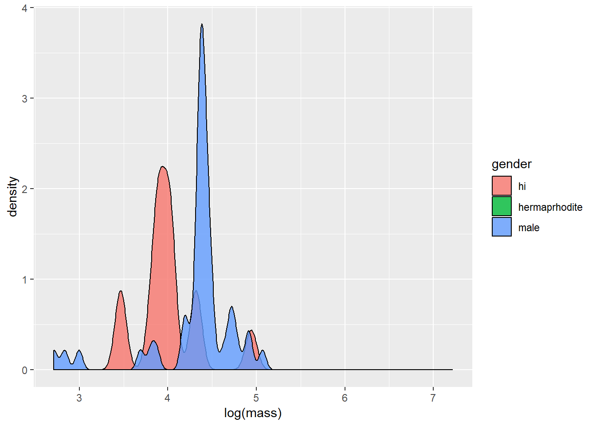
| Version | Author | Date |
|---|---|---|
| 91147b3 | Shengtong | 2018-11-06 |
## Error: cannot convert a logical vector to a character vector#=============================================================
## ggplot2: Color schemes
#=============================================================
colors() [1] "white" "aliceblue" "antiquewhite"
[4] "antiquewhite1" "antiquewhite2" "antiquewhite3"
[7] "antiquewhite4" "aquamarine" "aquamarine1"
[10] "aquamarine2" "aquamarine3" "aquamarine4"
[13] "azure" "azure1" "azure2"
[16] "azure3" "azure4" "beige"
[19] "bisque" "bisque1" "bisque2"
[22] "bisque3" "bisque4" "black"
[25] "blanchedalmond" "blue" "blue1"
[28] "blue2" "blue3" "blue4"
[31] "blueviolet" "brown" "brown1"
[34] "brown2" "brown3" "brown4"
[37] "burlywood" "burlywood1" "burlywood2"
[40] "burlywood3" "burlywood4" "cadetblue"
[43] "cadetblue1" "cadetblue2" "cadetblue3"
[46] "cadetblue4" "chartreuse" "chartreuse1"
[49] "chartreuse2" "chartreuse3" "chartreuse4"
[52] "chocolate" "chocolate1" "chocolate2"
[55] "chocolate3" "chocolate4" "coral"
[58] "coral1" "coral2" "coral3"
[61] "coral4" "cornflowerblue" "cornsilk"
[64] "cornsilk1" "cornsilk2" "cornsilk3"
[67] "cornsilk4" "cyan" "cyan1"
[70] "cyan2" "cyan3" "cyan4"
[73] "darkblue" "darkcyan" "darkgoldenrod"
[76] "darkgoldenrod1" "darkgoldenrod2" "darkgoldenrod3"
[79] "darkgoldenrod4" "darkgray" "darkgreen"
[82] "darkgrey" "darkkhaki" "darkmagenta"
[85] "darkolivegreen" "darkolivegreen1" "darkolivegreen2"
[88] "darkolivegreen3" "darkolivegreen4" "darkorange"
[91] "darkorange1" "darkorange2" "darkorange3"
[94] "darkorange4" "darkorchid" "darkorchid1"
[97] "darkorchid2" "darkorchid3" "darkorchid4"
[100] "darkred" "darksalmon" "darkseagreen"
[103] "darkseagreen1" "darkseagreen2" "darkseagreen3"
[106] "darkseagreen4" "darkslateblue" "darkslategray"
[109] "darkslategray1" "darkslategray2" "darkslategray3"
[112] "darkslategray4" "darkslategrey" "darkturquoise"
[115] "darkviolet" "deeppink" "deeppink1"
[118] "deeppink2" "deeppink3" "deeppink4"
[121] "deepskyblue" "deepskyblue1" "deepskyblue2"
[124] "deepskyblue3" "deepskyblue4" "dimgray"
[127] "dimgrey" "dodgerblue" "dodgerblue1"
[130] "dodgerblue2" "dodgerblue3" "dodgerblue4"
[133] "firebrick" "firebrick1" "firebrick2"
[136] "firebrick3" "firebrick4" "floralwhite"
[139] "forestgreen" "gainsboro" "ghostwhite"
[142] "gold" "gold1" "gold2"
[145] "gold3" "gold4" "goldenrod"
[148] "goldenrod1" "goldenrod2" "goldenrod3"
[151] "goldenrod4" "gray" "gray0"
[154] "gray1" "gray2" "gray3"
[157] "gray4" "gray5" "gray6"
[160] "gray7" "gray8" "gray9"
[163] "gray10" "gray11" "gray12"
[166] "gray13" "gray14" "gray15"
[169] "gray16" "gray17" "gray18"
[172] "gray19" "gray20" "gray21"
[175] "gray22" "gray23" "gray24"
[178] "gray25" "gray26" "gray27"
[181] "gray28" "gray29" "gray30"
[184] "gray31" "gray32" "gray33"
[187] "gray34" "gray35" "gray36"
[190] "gray37" "gray38" "gray39"
[193] "gray40" "gray41" "gray42"
[196] "gray43" "gray44" "gray45"
[199] "gray46" "gray47" "gray48"
[202] "gray49" "gray50" "gray51"
[205] "gray52" "gray53" "gray54"
[208] "gray55" "gray56" "gray57"
[211] "gray58" "gray59" "gray60"
[214] "gray61" "gray62" "gray63"
[217] "gray64" "gray65" "gray66"
[220] "gray67" "gray68" "gray69"
[223] "gray70" "gray71" "gray72"
[226] "gray73" "gray74" "gray75"
[229] "gray76" "gray77" "gray78"
[232] "gray79" "gray80" "gray81"
[235] "gray82" "gray83" "gray84"
[238] "gray85" "gray86" "gray87"
[241] "gray88" "gray89" "gray90"
[244] "gray91" "gray92" "gray93"
[247] "gray94" "gray95" "gray96"
[250] "gray97" "gray98" "gray99"
[253] "gray100" "green" "green1"
[256] "green2" "green3" "green4"
[259] "greenyellow" "grey" "grey0"
[262] "grey1" "grey2" "grey3"
[265] "grey4" "grey5" "grey6"
[268] "grey7" "grey8" "grey9"
[271] "grey10" "grey11" "grey12"
[274] "grey13" "grey14" "grey15"
[277] "grey16" "grey17" "grey18"
[280] "grey19" "grey20" "grey21"
[283] "grey22" "grey23" "grey24"
[286] "grey25" "grey26" "grey27"
[289] "grey28" "grey29" "grey30"
[292] "grey31" "grey32" "grey33"
[295] "grey34" "grey35" "grey36"
[298] "grey37" "grey38" "grey39"
[301] "grey40" "grey41" "grey42"
[304] "grey43" "grey44" "grey45"
[307] "grey46" "grey47" "grey48"
[310] "grey49" "grey50" "grey51"
[313] "grey52" "grey53" "grey54"
[316] "grey55" "grey56" "grey57"
[319] "grey58" "grey59" "grey60"
[322] "grey61" "grey62" "grey63"
[325] "grey64" "grey65" "grey66"
[328] "grey67" "grey68" "grey69"
[331] "grey70" "grey71" "grey72"
[334] "grey73" "grey74" "grey75"
[337] "grey76" "grey77" "grey78"
[340] "grey79" "grey80" "grey81"
[343] "grey82" "grey83" "grey84"
[346] "grey85" "grey86" "grey87"
[349] "grey88" "grey89" "grey90"
[352] "grey91" "grey92" "grey93"
[355] "grey94" "grey95" "grey96"
[358] "grey97" "grey98" "grey99"
[361] "grey100" "honeydew" "honeydew1"
[364] "honeydew2" "honeydew3" "honeydew4"
[367] "hotpink" "hotpink1" "hotpink2"
[370] "hotpink3" "hotpink4" "indianred"
[373] "indianred1" "indianred2" "indianred3"
[376] "indianred4" "ivory" "ivory1"
[379] "ivory2" "ivory3" "ivory4"
[382] "khaki" "khaki1" "khaki2"
[385] "khaki3" "khaki4" "lavender"
[388] "lavenderblush" "lavenderblush1" "lavenderblush2"
[391] "lavenderblush3" "lavenderblush4" "lawngreen"
[394] "lemonchiffon" "lemonchiffon1" "lemonchiffon2"
[397] "lemonchiffon3" "lemonchiffon4" "lightblue"
[400] "lightblue1" "lightblue2" "lightblue3"
[403] "lightblue4" "lightcoral" "lightcyan"
[406] "lightcyan1" "lightcyan2" "lightcyan3"
[409] "lightcyan4" "lightgoldenrod" "lightgoldenrod1"
[412] "lightgoldenrod2" "lightgoldenrod3" "lightgoldenrod4"
[415] "lightgoldenrodyellow" "lightgray" "lightgreen"
[418] "lightgrey" "lightpink" "lightpink1"
[421] "lightpink2" "lightpink3" "lightpink4"
[424] "lightsalmon" "lightsalmon1" "lightsalmon2"
[427] "lightsalmon3" "lightsalmon4" "lightseagreen"
[430] "lightskyblue" "lightskyblue1" "lightskyblue2"
[433] "lightskyblue3" "lightskyblue4" "lightslateblue"
[436] "lightslategray" "lightslategrey" "lightsteelblue"
[439] "lightsteelblue1" "lightsteelblue2" "lightsteelblue3"
[442] "lightsteelblue4" "lightyellow" "lightyellow1"
[445] "lightyellow2" "lightyellow3" "lightyellow4"
[448] "limegreen" "linen" "magenta"
[451] "magenta1" "magenta2" "magenta3"
[454] "magenta4" "maroon" "maroon1"
[457] "maroon2" "maroon3" "maroon4"
[460] "mediumaquamarine" "mediumblue" "mediumorchid"
[463] "mediumorchid1" "mediumorchid2" "mediumorchid3"
[466] "mediumorchid4" "mediumpurple" "mediumpurple1"
[469] "mediumpurple2" "mediumpurple3" "mediumpurple4"
[472] "mediumseagreen" "mediumslateblue" "mediumspringgreen"
[475] "mediumturquoise" "mediumvioletred" "midnightblue"
[478] "mintcream" "mistyrose" "mistyrose1"
[481] "mistyrose2" "mistyrose3" "mistyrose4"
[484] "moccasin" "navajowhite" "navajowhite1"
[487] "navajowhite2" "navajowhite3" "navajowhite4"
[490] "navy" "navyblue" "oldlace"
[493] "olivedrab" "olivedrab1" "olivedrab2"
[496] "olivedrab3" "olivedrab4" "orange"
[499] "orange1" "orange2" "orange3"
[502] "orange4" "orangered" "orangered1"
[505] "orangered2" "orangered3" "orangered4"
[508] "orchid" "orchid1" "orchid2"
[511] "orchid3" "orchid4" "palegoldenrod"
[514] "palegreen" "palegreen1" "palegreen2"
[517] "palegreen3" "palegreen4" "paleturquoise"
[520] "paleturquoise1" "paleturquoise2" "paleturquoise3"
[523] "paleturquoise4" "palevioletred" "palevioletred1"
[526] "palevioletred2" "palevioletred3" "palevioletred4"
[529] "papayawhip" "peachpuff" "peachpuff1"
[532] "peachpuff2" "peachpuff3" "peachpuff4"
[535] "peru" "pink" "pink1"
[538] "pink2" "pink3" "pink4"
[541] "plum" "plum1" "plum2"
[544] "plum3" "plum4" "powderblue"
[547] "purple" "purple1" "purple2"
[550] "purple3" "purple4" "red"
[553] "red1" "red2" "red3"
[556] "red4" "rosybrown" "rosybrown1"
[559] "rosybrown2" "rosybrown3" "rosybrown4"
[562] "royalblue" "royalblue1" "royalblue2"
[565] "royalblue3" "royalblue4" "saddlebrown"
[568] "salmon" "salmon1" "salmon2"
[571] "salmon3" "salmon4" "sandybrown"
[574] "seagreen" "seagreen1" "seagreen2"
[577] "seagreen3" "seagreen4" "seashell"
[580] "seashell1" "seashell2" "seashell3"
[583] "seashell4" "sienna" "sienna1"
[586] "sienna2" "sienna3" "sienna4"
[589] "skyblue" "skyblue1" "skyblue2"
[592] "skyblue3" "skyblue4" "slateblue"
[595] "slateblue1" "slateblue2" "slateblue3"
[598] "slateblue4" "slategray" "slategray1"
[601] "slategray2" "slategray3" "slategray4"
[604] "slategrey" "snow" "snow1"
[607] "snow2" "snow3" "snow4"
[610] "springgreen" "springgreen1" "springgreen2"
[613] "springgreen3" "springgreen4" "steelblue"
[616] "steelblue1" "steelblue2" "steelblue3"
[619] "steelblue4" "tan" "tan1"
[622] "tan2" "tan3" "tan4"
[625] "thistle" "thistle1" "thistle2"
[628] "thistle3" "thistle4" "tomato"
[631] "tomato1" "tomato2" "tomato3"
[634] "tomato4" "turquoise" "turquoise1"
[637] "turquoise2" "turquoise3" "turquoise4"
[640] "violet" "violetred" "violetred1"
[643] "violetred2" "violetred3" "violetred4"
[646] "wheat" "wheat1" "wheat2"
[649] "wheat3" "wheat4" "whitesmoke"
[652] "yellow" "yellow1" "yellow2"
[655] "yellow3" "yellow4" "yellowgreen" ## http://www.stat.columbia.edu/~tzheng/files/Rcolor.pdf
# ## Color choices in R: great palette selections from RColorBrewer
# ## Note: works in ggplot as well as base R
# install.packages("RColorBrewer") ## Only have to do this once
library(RColorBrewer)
#display.brewer.all()# ## 3 classes of colors: sequential, qualitative, diverging
# ## When would each type of color class be appropriate?
#
# ## Another great color palette: viridis
# ## Designed to be perfectly perceptually-uniform, both in color and black-and-white
# ## Also designed to be perceived by people with the most common form of color blindness
# install.packages("viridis") ## Only have to do this once
library(viridis)Loading required package: viridisLite#vignette("intro-to-viridis")# ## Using color palettes with ggplot:
# ## Think about what you're trying to color (discrete vs continuous) and why!
# ## Color schemes: scale_color_brewer(), scale_fill_brewer(), scale_color_gradient(), ...
ggplot(data = mpg) +
geom_point(mapping = aes(x = displ, y = hwy, color=hwy)) +
scale_color_viridis()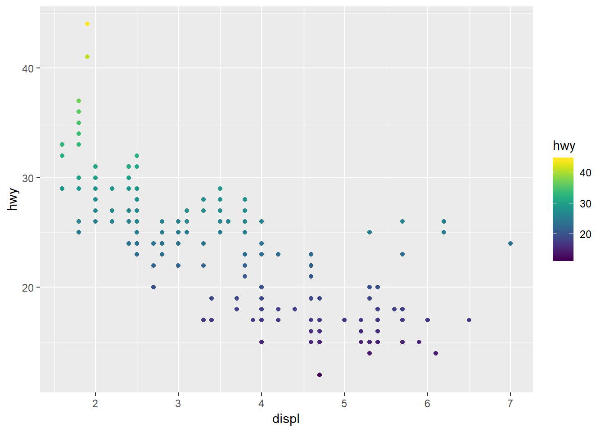
| Version | Author | Date |
|---|---|---|
| 91147b3 | Shengtong | 2018-11-06 |
## Why does this throw an error?
#ggplot(data = mpg) +
# geom_point(mapping = aes(x = displ, y = hwy, color=drv)) +
# scale_color_viridis()
ggplot(data = mpg) +
geom_point(mapping = aes(x = displ, y = hwy, color=drv)) +
scale_color_viridis(discrete=TRUE)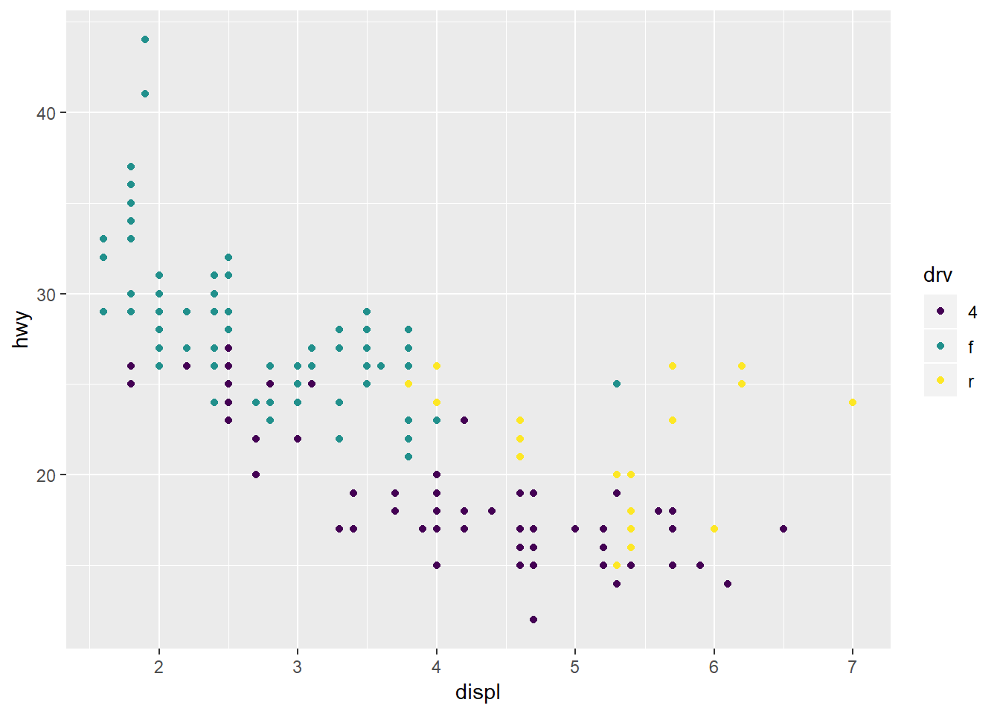
| Version | Author | Date |
|---|---|---|
| 91147b3 | Shengtong | 2018-11-06 |
ggplot(data = mpg) +
geom_point(mapping = aes(x = displ, y = hwy, color=drv)) +
scale_color_brewer(palette = "Accent") +
theme_bw()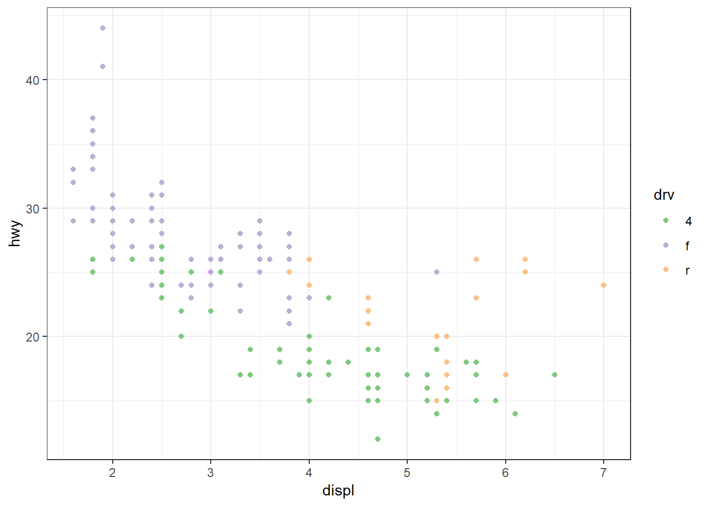
| Version | Author | Date |
|---|---|---|
| 91147b3 | Shengtong | 2018-11-06 |
ggplot(data = mpg) +
geom_point(mapping = aes(x = displ, y = hwy, color=drv)) +
scale_color_viridis(discrete=TRUE) +
theme_bw()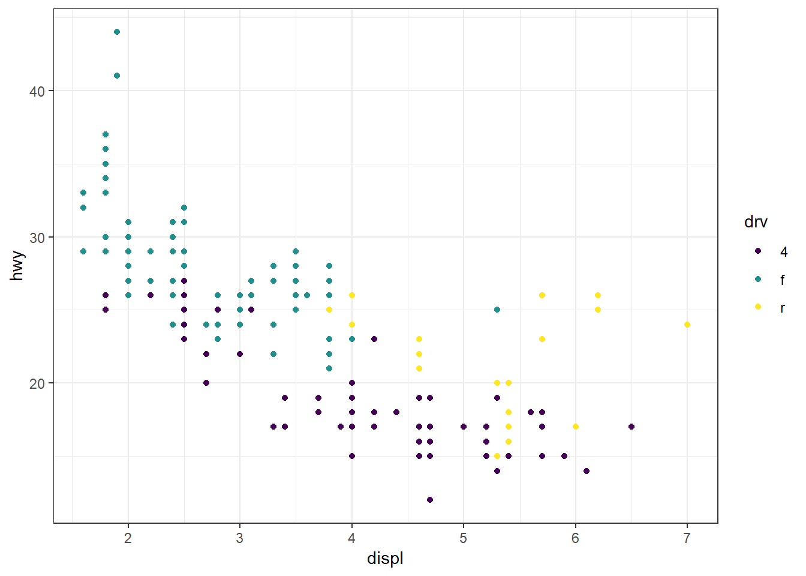
| Version | Author | Date |
|---|---|---|
| 91147b3 | Shengtong | 2018-11-06 |
ggplot(data = mpg) +
geom_point(mapping = aes(x = displ, y = hwy, color=hwy)) +
scale_color_gradient() +
theme_bw()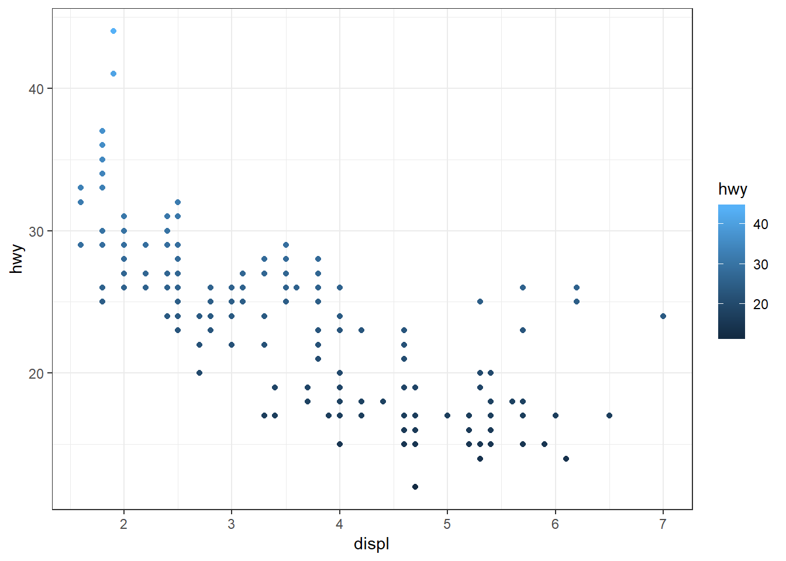
| Version | Author | Date |
|---|---|---|
| 91147b3 | Shengtong | 2018-11-06 |
## This doesn't behave as expected: note the aesthetic is fill and not color!
ggplot(data = mpg) +
geom_boxplot(mapping = aes(x=drv, y = hwy, fill=drv)) +
scale_color_viridis(discrete=TRUE) +
theme_bw()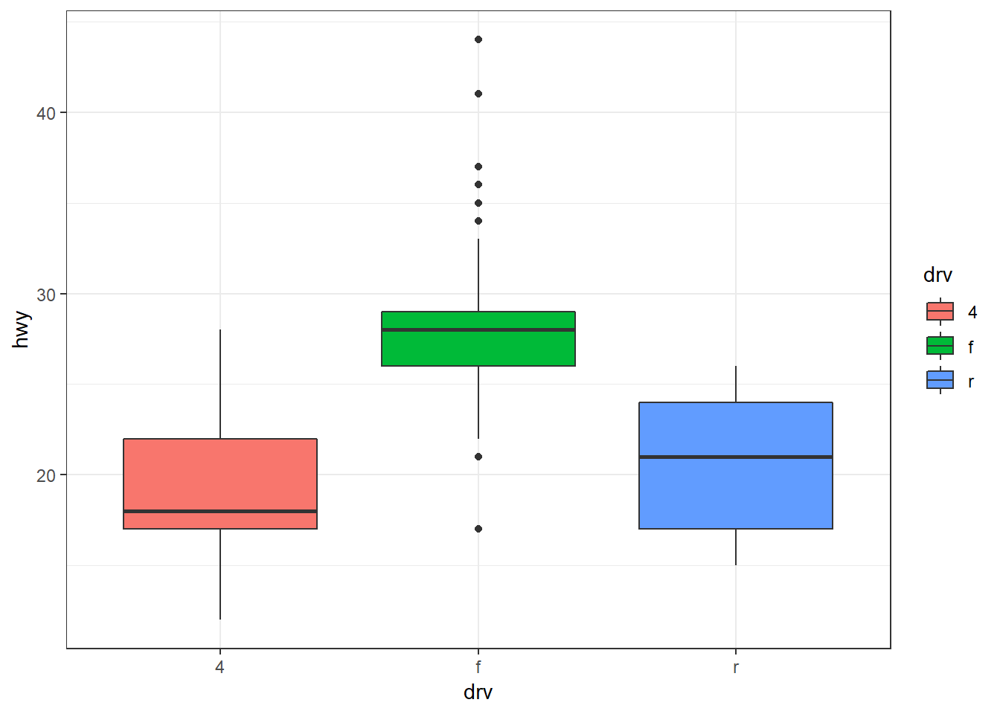
| Version | Author | Date |
|---|---|---|
| 91147b3 | Shengtong | 2018-11-06 |
## This works!
ggplot(data = mpg) +
geom_boxplot(mapping = aes(x=drv, y = hwy, fill=drv)) +
scale_fill_viridis(discrete=TRUE) +
theme_bw()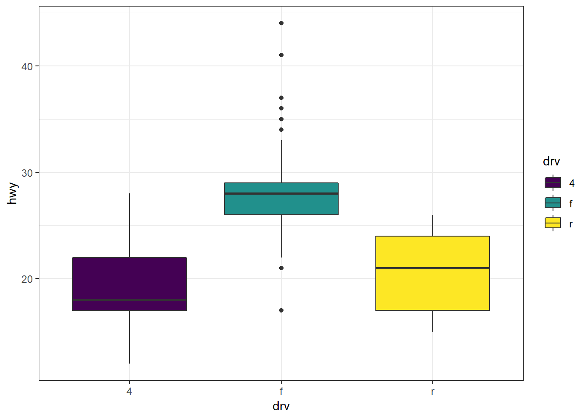
| Version | Author | Date |
|---|---|---|
| 91147b3 | Shengtong | 2018-11-06 |
## Darek's question: Can you use several palettes at once?
ggplot(filter(mpg, displ <= 3.5)) +
geom_point(aes(x=displ, y=hwy, color=hwy)) +
# scale_color_viridis() +
geom_point(data=filter(mpg, displ > 3.5, displ <= 5.5),
aes(x=displ, y=hwy, color=hwy)) +
# scale_color_viridis() +
geom_point(data=filter(mpg, displ > 5.5),
aes(x=displ, y=hwy), color="green") +
theme_bw()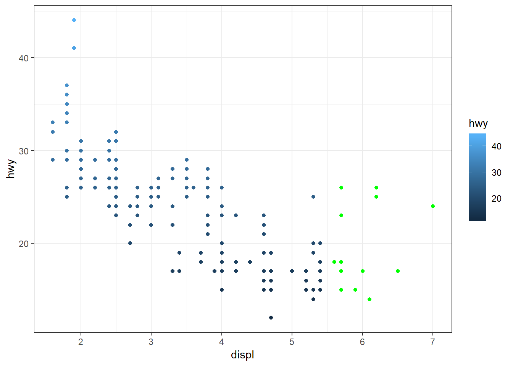
| Version | Author | Date |
|---|---|---|
| 91147b3 | Shengtong | 2018-11-06 |
# ## Choosing colors by hand
# ## Ewww, this plot looks terrible, don't do red and green together!
ggplot(data = mpg) +
geom_point(mapping = aes(x = displ, y = hwy, color=hwy)) +
scale_color_gradient(low="green", high="red") +
theme_bw()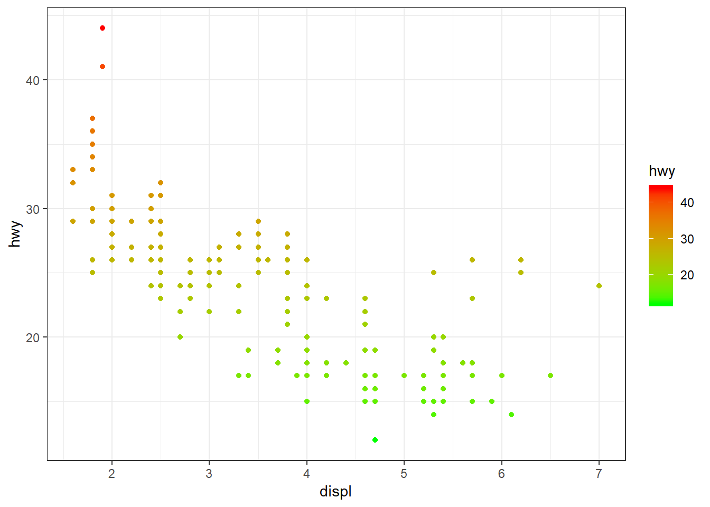
| Version | Author | Date |
|---|---|---|
| 91147b3 | Shengtong | 2018-11-06 |
ggplot(data = mpg) +
geom_point(mapping = aes(x = displ, y = hwy, color=drv)) +
scale_color_manual(values=c("darkblue", "seagreen1", "deeppink2")) +
theme_bw()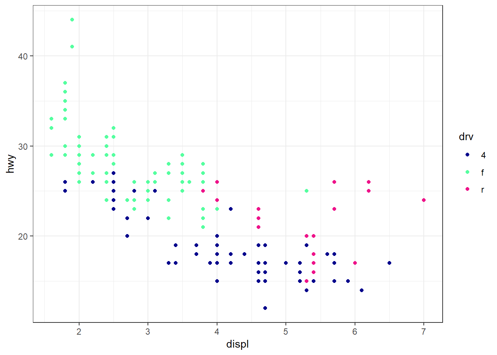
| Version | Author | Date |
|---|---|---|
| 91147b3 | Shengtong | 2018-11-06 |
#=============================================================
## Some final dplyr things
#=============================================================
## dplyr: between() is a replacement for x >= left & x <= right,
x <- rnorm(1e2)
x[between(x, -1, 1)] [1] -0.1259886575 -0.5773728877 -0.0182097739 0.2560252230 -0.7847604120
[6] -0.4131694096 -0.5798840956 0.1834647296 0.7789849487 -0.1318200487
[11] 0.6965441552 0.7119939397 -0.4012129360 -0.2901701209 -0.2295589517
[16] 0.8270893472 -0.4443644560 0.2125718079 -0.0054784086 -0.7718909589
[21] -0.5832461507 0.4345987905 0.5223570224 0.1348486919 0.6685079770
[26] 0.1654308795 0.3467112903 0.1555283770 -0.1543723007 -0.9425406702
[31] 0.7415524761 -0.4586699087 0.1519036358 0.1311753677 0.6169200515
[36] 0.1481393012 -0.1516286945 -0.2593601914 -0.3439935173 -0.1411464808
[41] 0.3343868028 0.6144679507 -0.6197153447 0.0002111217 -0.1638040615
[46] 0.6302551112 0.5216520487 -0.6786712073 -0.2942612190 0.5171862234
[51] 0.2144559378 -0.5872575052 0.9049742893 0.9140527213 0.2671928869
[56] 0.0651716590 0.0830413216 -0.1102201708 -0.1634592926 -0.5346482502
[61] 0.4055601293 -0.3049972653 0.4359805567 -0.1244414637 0.3627727855
[66] -0.2582559420 0.1276777787 -0.4719391118 0.1081270454 -0.8907715886diamonds %>% filter(between(depth, 60, 61))# A tibble: 8,451 x 10
carat cut color clarity depth table price x y z
<dbl> <ord> <ord> <ord> <dbl> <dbl> <int> <dbl> <dbl> <dbl>
1 0.22 Premium F SI1 60.4 61 342 3.88 3.84 2.33
2 0.2 Premium E SI2 60.2 62 345 3.79 3.75 2.27
3 0.32 Premium E I1 60.9 58 345 4.38 4.42 2.68
4 0.23 Very Good H VS1 61 57 353 3.94 3.96 2.41
5 0.23 Very Good G VVS2 60.4 58 354 3.97 4.01 2.41
6 0.23 Very Good D VS2 60.5 61 357 3.96 3.97 2.4
7 0.23 Very Good F VS1 60.9 57 357 3.96 3.99 2.42
8 0.23 Very Good F VS1 60 57 402 4 4.03 2.41
9 0.23 Very Good E VS1 60.7 59 402 3.97 4.01 2.42
10 0.26 Very Good D VS2 60.8 59 403 4.13 4.16 2.52
# ... with 8,441 more rowsmpg %>% filter(between(displ,3.5,5.4)) %>%
summarize(min_displ = min(displ),
max_displ = max(displ))# A tibble: 1 x 2
min_displ max_displ
<dbl> <dbl>
1 3.5 5.4## Other select helpers: starts_with, ends_with, contains, everything, rename, ...
starwars %>% select(ends_with("color"))# A tibble: 87 x 3
hair_color skin_color eye_color
<chr> <chr> <chr>
1 blond fair blue
2 <NA> gold yellow
3 <NA> white, blue red
4 none white yellow
5 brown light brown
6 brown, grey light blue
7 brown light blue
8 <NA> white, red red
9 black light brown
10 auburn, white fair blue-gray
# ... with 77 more rowsstarwars %>% select(contains("_"))# A tibble: 87 x 4
hair_color skin_color eye_color birth_year
<chr> <chr> <chr> <dbl>
1 blond fair blue 19
2 <NA> gold yellow 112
3 <NA> white, blue red 33
4 none white yellow 41.9
5 brown light brown 19
6 brown, grey light blue 52
7 brown light blue 47
8 <NA> white, red red NA
9 black light brown 24
10 auburn, white fair blue-gray 57
# ... with 77 more rowsstarwars %>% select(everything())# A tibble: 87 x 13
name height mass hair_color skin_color eye_color birth_year gender
<chr> <int> <dbl> <chr> <chr> <chr> <dbl> <fct>
1 Luke~ 172 77 blond fair blue 19 male
2 C-3PO 167 75 <NA> gold yellow 112 hi
3 R2-D2 96 32 <NA> white, bl~ red 33 hi
4 Dart~ 202 136 none white yellow 41.9 male
5 Leia~ 150 49 brown light brown 19 hi
6 Owen~ 178 120 brown, gr~ light blue 52 male
7 Beru~ 165 75 brown light blue 47 hi
8 R5-D4 97 32 <NA> white, red red NA hi
9 Bigg~ 183 84 black light brown 24 male
10 Obi-~ 182 77 auburn, w~ fair blue-gray 57 male
# ... with 77 more rows, and 5 more variables: homeworld <chr>,
# species <chr>, films <list>, vehicles <list>, starships <list>starwars %>% select(gender, everything())# A tibble: 87 x 13
gender name height mass hair_color skin_color eye_color birth_year
<fct> <chr> <int> <dbl> <chr> <chr> <chr> <dbl>
1 male Luke~ 172 77 blond fair blue 19
2 hi C-3PO 167 75 <NA> gold yellow 112
3 hi R2-D2 96 32 <NA> white, bl~ red 33
4 male Dart~ 202 136 none white yellow 41.9
5 hi Leia~ 150 49 brown light brown 19
6 male Owen~ 178 120 brown, gr~ light blue 52
7 hi Beru~ 165 75 brown light blue 47
8 hi R5-D4 97 32 <NA> white, red red NA
9 male Bigg~ 183 84 black light brown 24
10 male Obi-~ 182 77 auburn, w~ fair blue-gray 57
# ... with 77 more rows, and 5 more variables: homeworld <chr>,
# species <chr>, films <list>, vehicles <list>, starships <list>starwars %>% rename(Name = name)# A tibble: 87 x 13
Name height mass hair_color skin_color eye_color birth_year gender
<chr> <int> <dbl> <chr> <chr> <chr> <dbl> <fct>
1 Luke~ 172 77 blond fair blue 19 male
2 C-3PO 167 75 <NA> gold yellow 112 hi
3 R2-D2 96 32 <NA> white, bl~ red 33 hi
4 Dart~ 202 136 none white yellow 41.9 male
5 Leia~ 150 49 brown light brown 19 hi
6 Owen~ 178 120 brown, gr~ light blue 52 male
7 Beru~ 165 75 brown light blue 47 hi
8 R5-D4 97 32 <NA> white, red red NA hi
9 Bigg~ 183 84 black light brown 24 male
10 Obi-~ 182 77 auburn, w~ fair blue-gray 57 male
# ... with 77 more rows, and 5 more variables: homeworld <chr>,
# species <chr>, films <list>, vehicles <list>, starships <list>## Multiple groupings
grp <- diamonds %>% group_by(cut, color)
summarize(grp, avg_price = mean(price),
median_carat = median(carat),
count = n())# A tibble: 35 x 5
# Groups: cut [?]
cut color avg_price median_carat count
<ord> <ord> <dbl> <dbl> <int>
1 Fair D 4291. 0.9 163
2 Fair E 3682. 0.9 224
3 Fair F 3827. 0.9 312
4 Fair G 4239. 0.98 314
5 Fair H 5136. 1.01 303
6 Fair I 4685. 1.01 175
7 Fair J 4976. 1.03 119
8 Good D 3405. 0.7 662
9 Good E 3424. 0.7 933
10 Good F 3496. 0.71 909
# ... with 25 more rows## And we can ungroup
grp %>%
ungroup() %>%
summarize(n())# A tibble: 1 x 1
`n()`
<int>
1 53940#=============================================================
## Tidy data
##
## 鈥淗appy families are all alike; every unhappy family is unhappy in its own way鈥?
## -Leo Tolstoy
## 鈥淭idy datasets are all alike but every messy dataset is messy in its own way.鈥?
## -Hadley Wickham
##
## ~ 80% of data analysis time is arguably spent cleaning and preparing data
#=============================================================
## What is tidy data?
## 1) Each column is a variable, 2) each row is an observation, 3) each value has
## it's own cell
## !!! If you're having trouble making a figure, stop and think whether your
## data is tidy!
## Look at these three tables, where data is organized differently.
## Which one is tidy?
table1# A tibble: 6 x 4
country year cases population
<chr> <int> <int> <int>
1 Afghanistan 1999 745 19987071
2 Afghanistan 2000 2666 20595360
3 Brazil 1999 37737 172006362
4 Brazil 2000 80488 174504898
5 China 1999 212258 1272915272
6 China 2000 213766 1280428583table2# A tibble: 12 x 4
country year type count
<chr> <int> <chr> <int>
1 Afghanistan 1999 cases 745
2 Afghanistan 1999 population 19987071
3 Afghanistan 2000 cases 2666
4 Afghanistan 2000 population 20595360
5 Brazil 1999 cases 37737
6 Brazil 1999 population 172006362
7 Brazil 2000 cases 80488
8 Brazil 2000 population 174504898
9 China 1999 cases 212258
10 China 1999 population 1272915272
11 China 2000 cases 213766
12 China 2000 population 1280428583table3# A tibble: 6 x 3
country year rate
* <chr> <int> <chr>
1 Afghanistan 1999 745/19987071
2 Afghanistan 2000 2666/20595360
3 Brazil 1999 37737/172006362
4 Brazil 2000 80488/174504898
5 China 1999 212258/1272915272
6 China 2000 213766/1280428583## Wide versus long data
## Wide is often more intuitive for human eyes, but long is more machine readable
## Example: ## of enrolled patients in two different treatment groups at 5 sites
messy <- data.frame(site=c("a", "b", "c", "d", "e"),
trt1=c(56,76,43,25,21),
trt2=c(123,234,187,198,23))
messy site trt1 trt2
1 a 56 123
2 b 76 234
3 c 43 187
4 d 25 198
5 e 21 23## Why is this messy? Well let's try to plot a ggplot scatterplot of
## the number of patients per site/per treatment group
ggplot(messy) + geom_point(aes(x=site, y=trt1)) +
geom_point(aes(x=site, y=trt2))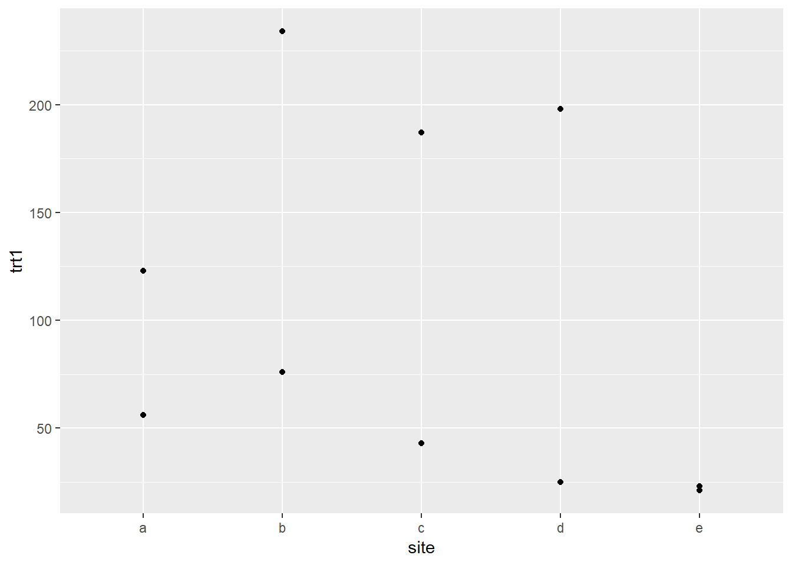
| Version | Author | Date |
|---|---|---|
| 91147b3 | Shengtong | 2018-11-06 |
## Three main functions: gather, separate, spread
## 1) gather => move from wide to long format ("gather" columns into rows)
## Think about key-value pair (two new variable)
gm <- messy %>% gather(treatment, count, trt1:trt2)
gm <- messy %>% gather(treatmentblahblh, ct, -site)
gm <- messy %>% gather(treatment, count, trt1, trt2)
gm site treatment count
1 a trt1 56
2 b trt1 76
3 c trt1 43
4 d trt1 25
5 e trt1 21
6 a trt2 123
7 b trt2 234
8 c trt2 187
9 d trt2 198
10 e trt2 23## 2) spread (opposite of gather!) => move from long to wide format (spread rows to columns)
gm %>% spread(key=treatment, value=count) site trt1 trt2
1 a 56 123
2 b 76 234
3 c 43 187
4 d 25 198
5 e 21 23## 3) separate: split off one column into two by separating character
df <- data.frame(x = c("a/b", "a/d", "b/c"))
df x
1 a/b
2 a/d
3 b/cdf %>% separate(x, c("A", "B")) A B
1 a b
2 a d
3 b cseparate(df, x, c("A", "B"), split="/") A B
1 a b
2 a d
3 b c#-----------------------------------------------------------------
## In class exercises:
## Why isn't table2 tidy? Let's make it tidy.
## Why isn't table3 tidy? Let's make it tidy.
## `table5` is also not tidy. Why not? Let's make it tidy.
#-----------------------------------------------------------------
table2 %>% spread(key=type, value=count)# A tibble: 6 x 4
country year cases population
<chr> <int> <int> <int>
1 Afghanistan 1999 745 19987071
2 Afghanistan 2000 2666 20595360
3 Brazil 1999 37737 172006362
4 Brazil 2000 80488 174504898
5 China 1999 212258 1272915272
6 China 2000 213766 1280428583table3 %>% separate(rate, into=c("cases", "population"),
split="/")# A tibble: 6 x 4
country year cases population
* <chr> <int> <chr> <chr>
1 Afghanistan 1999 745 19987071
2 Afghanistan 2000 2666 20595360
3 Brazil 1999 37737 172006362
4 Brazil 2000 80488 174504898
5 China 1999 212258 1272915272
6 China 2000 213766 1280428583table5 %>% unite(col="year", century, year, sep="") %>%
separate(rate, into=c("cases", "population"),
split="/")# A tibble: 6 x 4
country year cases population
<chr> <chr> <chr> <chr>
1 Afghanistan 1999 745 19987071
2 Afghanistan 2000 2666 20595360
3 Brazil 1999 37737 172006362
4 Brazil 2000 80488 174504898
5 China 1999 212258 1272915272
6 China 2000 213766 1280428583#=============================================================
## Relational data
#=============================================================
## Two-table verbs for merge/join operations
## 1. inner_join(A, B, by= "...")
## 2. left_join(A, B, by= "...")
## 3. semi_join(A, B, by= "...")
## 4. anti_join(A, B, by= "...")
superheroes <- read.csv("superheroes.csv")
publishers <- read.csv("publishers.csv")
superheroes
publishers
## Inner join:
## Return all rows of x with matching values of y, and all columns of x & y
## If multiple matches, return all match combinations.
inner_join(superheroes, publishers, by="publisher")
## Why doesn't Hellboy appear?
## Does the order of x and y matter here?## Left join:
## Return all rows of x, and all columns of x & y.
## If multiple matches, return all match combinations
left_join(superheroes, publishers, by="publisher")
## Why does Hellboy have an NA for yr_founded?
## Right join:
## Return all rows of y, and all columns of x & y.
## If multiple matches, return all match combinations
right_join(superheroes, publishers, by="publisher")
## Where is Hellboy?
## What is going on with Image?
## Full join:
## Return all rows of x and y, keeping rows and columns that appear in either.
full_join(superheroes, publishers, by="publisher")
## Note that we have both Hellboy and Image## Note: it is usually a better idea to use these *_join statements that simply
## doing a cbind() to bind columns together (e.g., unless you are SURE the rows are in the
## same order!)
## semi_join: keep all observations in x that have a match in y
## anti_join: drop all observations in x that have a match in y
anti_join(superheroes, publishers, by="publisher")
anti_join(publishers, superheroes, by="publisher")
semi_join(publishers, superheroes, by="publisher")
semi_join(superheroes, publishers, by="publisher")
inner_join(publishers, superheroes, by="publisher")#-----------------------------------------------------------------
## In class exercises:
## `table4a` + `table4b` together contain all of the information from `table1`.
## Why aren't these two tables tidy? Let's make them tidy and combine them
## to recreate table1.
#-----------------------------------------------------------------
tab <- full_join(table4a, table4b, by="country") %>%
gather(key=year, value=val, -country) %>%
separate(year, into=c("year", "type"), split=".") %>%
spread(key=type, value=val) %>%
rename(cases=x, population=y)#=============================================================
## Importing and exporting data: Chapter 11 http://r4ds.had.co.nz/data-import.html
#=============================================================
## Reading files
## base R: read.table, read.csv, read.delim
## readr (tidyverse): read_table, read_csv, read_tsv
superheroes_base <- read.csv("../../lecture6/superheroes.csv")
superheroes_readr <- read_csv("../../lecture6/superheroes.csv")
## skip=n to skip the first few lines of a file (if there are metadata)
## Specify colnames or not
superheroes_base <- read.csv("../../lecture6/superheroes.csv", header=TRUE)
superheroes_readr <- read_csv("../../lecture6/superheroes.csv", col_names=TRUE)
## Writing files
## base r: write.table, write.csv
## readr (tidyverse): write_table, write_csv
## For reading from Excel files:
?readxl#-------------------------------------------------------------
## Let's play with the gapminder data for the rest of class
#-------------------------------------------------------------
# install.packages("gapminder") ## Only have to do this one time
# library(gapminder)
# my_gap <- data(gapminder)
# Answer the following questions:
# - How many observations are there in the data? How many observations per continent? How
# many observations are there per country within each continent? How many variables?
# What data type is each variable?
# - Calculate the average life expectancy per continent. Now calculate the median life
# expectancy per continent in 1952 and 2007.
# - Make a simple scatterplot of GDP per capita versus life expectancy for 2007, where the
# size of the points reflects the size of the population.
# - Now make the plot as ugly and uninformative as possible -- think bad color choices,
# truncated axes, overlapping points, ...
# - Now let's make it as informative as possible -- think x-axis on log10 scale, informative
# color/shape, etc....
# - Taking your nice looking plot, facet by continent. Using the country_colors object in
# gapminder, color the points by country.
# - Explore some other plots! Don't hesitate to use filter or select to focus on a subset.
#
# - Identify the countries with worst and best life expectancy in Asia for each year.
# Hint: use min_rank().
# - Identify which country had the sharpest 5-year drop in life expectancy in each continent.
# Hint: use lag() in a mutate() to create a new variable representing the lag.
#=============================================================
## Next time: review tidy data, multiple linear regression
#=============================================================sessionInfo()R version 3.5.1 (2018-07-02)
Platform: x86_64-w64-mingw32/x64 (64-bit)
Running under: Windows 10 x64 (build 17134)
Matrix products: default
locale:
[1] LC_COLLATE=English_United States.1252
[2] LC_CTYPE=English_United States.1252
[3] LC_MONETARY=English_United States.1252
[4] LC_NUMERIC=C
[5] LC_TIME=English_United States.1252
attached base packages:
[1] stats graphics grDevices utils datasets methods base
other attached packages:
[1] bindrcpp_0.2.2 viridis_0.5.1 viridisLite_0.3.0
[4] RColorBrewer_1.1-2 forcats_0.3.0 stringr_1.3.1
[7] dplyr_0.7.7 purrr_0.2.5 readr_1.1.1
[10] tidyr_0.8.2 tibble_1.4.2 ggplot2_3.1.0
[13] tidyverse_1.2.1
loaded via a namespace (and not attached):
[1] tidyselect_0.2.5 haven_1.1.2 lattice_0.20-35
[4] colorspace_1.3-2 htmltools_0.3.6 yaml_2.2.0
[7] utf8_1.1.4 rlang_0.3.0.1 R.oo_1.22.0
[10] pillar_1.3.0 glue_1.3.0 withr_2.1.2
[13] R.utils_2.7.0 modelr_0.1.2 readxl_1.1.0
[16] bindr_0.1.1 plyr_1.8.4 munsell_0.5.0
[19] gtable_0.2.0 workflowr_1.1.1 cellranger_1.1.0
[22] rvest_0.3.2 R.methodsS3_1.7.1 evaluate_0.12
[25] labeling_0.3 knitr_1.20 fansi_0.4.0
[28] broom_0.5.0 Rcpp_0.12.19 scales_1.0.0
[31] backports_1.1.2 jsonlite_1.5 gridExtra_2.3
[34] hms_0.4.2 digest_0.6.18 stringi_1.2.4
[37] grid_3.5.1 rprojroot_1.3-2 cli_1.0.1
[40] tools_3.5.1 magrittr_1.5 lazyeval_0.2.1
[43] crayon_1.3.4 whisker_0.3-2 pkgconfig_2.0.2
[46] xml2_1.2.0 lubridate_1.7.4 assertthat_0.2.0
[49] rmarkdown_1.10 httr_1.3.1 rstudioapi_0.8
[52] R6_2.3.0 nlme_3.1-137 git2r_0.23.0
[55] compiler_3.5.1 This reproducible R Markdown analysis was created with workflowr 1.1.1